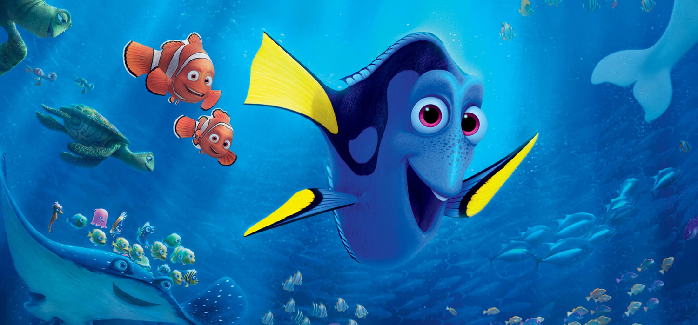

About Movie
Finding Nemo is a 2003 American computer-animated comedy-drama adventure film produced by Pixar Animation Studios and released by Walt Disney Pictures . Directed by Andrew Stanton with co-direction by Lee Unkrich, the screenplay was written by Stanton, Bob Peterson, and David Reynolds from a story by Stanton.The film stars the voices of Albert Brooks, Ellen DeGeneres, Alexander Gould, Willem Dafoe, and Geoffrey Rush. It tells the story of an overprotective clownfish named Marlin who, along with a regal blue tang named Dory, searches for his missing son Nemo. Along the way, Marlin learns to take risks and comes to terms with Nemo taking care of himself. Released on May 30, 2003, Finding Nemo received widespread acclaim from critics, who praised the visual elements, screenplay and characters that has been cited as funny to both young moviegoers and their parents.[3] It also became the highest-grossing animated film at the time of its release, and was the second-highest-grossing film of 2003, earning a total of $871 million worldwide by the end of its initial theatrical run. The film was also nominated for three Academy Awards, winning one for Best Animated Feature, becoming the first Pixar film to do so.

Finding Nemo is the best-selling DVD title of all time, with over 40 million copies sold as of 2006, and was the highest-grossing G-rated film of all time before Pixar's own Toy Story 3 overtook it. The film was re-released in 3D in 2012. In 2008, the American film Institute named it as the 10th greatest American animated film as part of their 10 Top 10 lists. A sequel, Finding Dory, was released in June 2016.ome time later, Marlin is overprotective of Nemo, born with a stunted right fin. On Nemo's first day of school, Marlin embarrasses Nemo, and the two argue. While Marlin is talking to Nemo's teacher, Nemo defiantly approaches a nearby speedboat, where a pair of scuba divers capture him. Marlin pursues the boat in vain and meets Dory, a blue tang with acute short-term memory loss, who offers her help. The two encounter Bruce, Anchor, and Chum, three sharks who have sworn to abstain from eating fish. Marlin discovers a diver's mask that fell from the boat; he accidentally hits Dory with it, giving her a nosebleed. The scent sends Bruce into a feeding frenzy, but they flee after accidentally setting off a ring of old naval mines, which knock Marlin and Dory unconscious. Nemo is placed in an aquarium in the office of dentist Philip Sherman in Sydney, Australia. He meets the "Tank Gang", including yellow tang Bubbles, starfish Peach, cleaner shrimp Jacques, blowfish Bloat, royal gramma Gurgle, and twin damselfish Deb and Flo, led by Gill, a Moorish idol. Nemo learns he is to be given to Sherman's young niece, Darla, who has killed her previous fish. Gill devises a risky escape plan: Nemo, who can fit inside the aquarium's filter tube, will jam the filter with a pebble, forcing Sherman to put the fish into plastic bags while he cleans the tank, allowing them to roll out the window and into the harbor. Nemo attempts the maneuver, but fails and is almost killed. Marlin and Dory wake up unharmed, but the mask falls into a deep trench. They descend after it and encounter an anglerfish that chases them. Dory memorizes the address written on the goggles, and they escape. Dory and Marlin receive directions from a school of moonfish, but Marlin disregards them to take what he believes is a safer route. They stumble into a forest of jellyfish, the stings of which knock them unconscious. They awaken in the East Australian Current with a group of sea turtles, including Crush and his son, Squirt. Marlin tells them about his quest, and the story is relayed across the ocean to Sydney, where a pelican, Nigel, tells the Tank Gang. Inspired by his father's bravery, Nemo makes another attempt to jam the filter and succeeds, and soon the aquarium is covered in green algae.

The inspiration for Finding Nemo sprang from multiple experiences, going back to director Andrew Stanton's childhood, when he loved going to the dentist to see the fish tank, assuming that the fish were from the ocean and wanted to go home. In 1992, shortly after his son was born, he and his family took a trip to Six Flags Discovery Kingdom (which was called Marine World at the time). There, after seeing the shark tube and various exhibits, he felt that the underwater world could be done beautifully in computer animation. Later, in 1997, he took his son for a walk in the park but realized that he was overprotecting him and lost an opportunity to have a father-son experience that day.